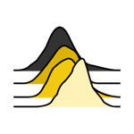
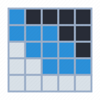
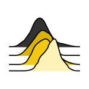
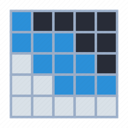

UOC - Máster Universitario en Ciencia de Datos
M2.859 - Visualización de datos - Aula 2
PEC 2
Docentes:
Julià Minguillón Alfonso
Ramon Caihuelas Quiles
Alumno:
Cuauhtémoc Alejandro Medina Uicab
Fecha de entrega:
Abril 22, 2024
Visualizaciones
Radar chart
Ridgeline chart

Heatmap

Publicación:
https://kmualex.github.io/pec2-M2859-aula2/
Cuauhtémoc Alejandro Medina Uicab
Radar chart
Ridgeline chart
Heatmap
Radar chart
Nombre:
Conocida tambien por: gráfica de estrella, gráfica de red, diagrama de Kiviat, polígono irregular, gráfica polar, gráfica cobweb 1 , etc.
Origen:
El origen de gráfica es controvertido. Se puede rastrear en los trabajos de André-Michel Guerry (1829)2 o bien en los trabajos de Florence Nightingale en 18583 al servicio del ejército británico. Lo común es asociar su creación con el alemán Georg von Mayr en 18774


Descripción/funcionamiento:
Las gráficas de radar facilitan la comparación entre múltiples variables cuantitativas y consisten en múltiples ejes, donde cada eje representa una sola variable arreglados radialmente. Normalemente los valores adjacentes son conectados por líneas. Son útiles para visualizar qué variables tiene valores similares y también para determinar que variables poseen puntuaciones "altas" o "bajas" dentro del conjunto de datos5
Ejemplos de aplicación:
Análsis de desempeño, comparación de datos multivariados, relación entre variables, despliegue de datos periódicos o cíclicos dónde la disposición circular acentúe los patrones de comportamiento de las variables, cuando se desea comparar dos o mas variables o productos sobre un rango de características.
Tipo de datos:
La representación está diseñada principalemente para representar datos cuantitativos. Los ejes emplean datos categóricos. El juego de datos debe ser positivo y normalmente debe estar normalizado. No hay limitación en cuanto a los datos cuantitativos pero sí en cuanto a la cantidad de ejes y a la cantidad de variable de comparación entre 1 a máximo 5.
Limitaciones
Debido a su disposición radial/circular es difícil de interpretar. El orden de las catagorías tiene un enorme impacto. Las variariones en las áreas no son lineales. Limitado número de categorías representables. Los ejes no comparten las misma escalas siempre. Los traslapes pueden hacer ilegible la gráfica6. De acuerdo con Graham Odds 7 y Stephen Few8 el uso de este tipo de gráficas es desaconsejable y se sugiere considerar siempre alternativas de representación.
Imagen de: "Kep Radar Graphs Below the Radar - Far Below. Stephen Few. Mayo 2005" 8
Ejemplo: Kaggle - World University Rankings
Universidades de México - 2016
Juego de datos
Fuente de datos: Kaggle - World University Rankings
Archivo: timesData.csv
2604 registros, 14 atributos, Atributos mixtos.
Imagen de: "Kaggle - World University Rankings" 9
Ridgeline chart
Nombre:
Originalmente conocida como Joy Plot. Ridgeline chart (gráfica de cumbres).
Origen:
El nombre del gráfico se originó en honor al album Joy Divisionde 1979, "Unknown Pleasures" que presentaba en su portada un visualización con ondas tipo radio creando un efecto tridimensional. Sin imaginar lo desafortuando que resultaría tal nombre por estar relacionado con el grupo de mujeres judías de los campos de concentración Nazi 10
Imagen de: "The Flerlage Twins - Joy Plot History" 11
Descripción/funcionamiento:
La grafica permite el estudio de la distribución de una variable numérica para distintos grupos. Es posible representar diferentes densidades en diferentes aspectos.
Ejemplos de aplicación:
Uno de los usos populares del gráfico es medir una variable numérica respecto al tiempo, por ejemplo la variación de temperaturas respecto a tiempo. En general sirve para observar la densidad de la distribución de una variable comparada por categorías.
Imagen de: "Joy plots for climate change. Gavin. Julio 2017" 13
Tipo de datos:
Datos numéricos principalmente asociados a categorías. No está limitado a ello, pero la potencia de la visualización se dá al usar tal combinación.
Limitaciones
La principal limitación es sobre los datos categóricos que no pueden ser demasiados. La belleza del gráfico depende del traslape de las curvas de densidad y ahí existe otra limitante en cuanto a la cantidad de traslape y el uso del color.12
Ejemplo: EDA How people spend their time
Juego de datos
Fuente de datos: Kaggle - [EDA] How people spend their time
Archivo: time_used.csv
33 muestras, para 6 categorías
Imagen de: "Kaggle - EDA How people spend their time "
Heatmap
Nombre:
Heatmap o mapas de calor
Origen:
El método de mapas de calor se ha utilizado como técnica de visualización de datos desde el siglo XIX cuando los urbanistas de París utilizaban diferentes colores para marcar el mapa d ela ciudad con el fin de ilustrar datos estadísticos.
Imagen de: http://euclid.psych.yorku.ca/SCS/Gallery/images/loua/loua1873-scalogram.jpg 14
Descripción/funcionamiento:
El heatmap o mapa de calor muestra simultáneamente un orden jerárquico de renglones y columnas para mostrar la agrupación de datos en una disposición de matriz. Consiste en un arreglo rectangular de celdas donde cada celda tiene asociado una intesidad de color qu representa la intersección correspondiente en la matriz. 15
Ejemplos de aplicación:
Los mapas de calor tienen múltiples usos. Principalmente muestras la correlación entre variables, para tendencias de análisis web, detección de valores extremos (outliers), entre otros.
Tipo de datos:
Principalmente sirve para representar datos numéricos.
Limitaciones
Como su vocación es la de mostrar patrones, está limitado al momento de intentar conocer un dato a precisión o un dato particular, generalemente es para la detección de patrones.
Ejemplo:
Juego de datos
Fuente de datos: Kaggle -
Archivo: hm.csv

Imagen de: "Kaggle - "